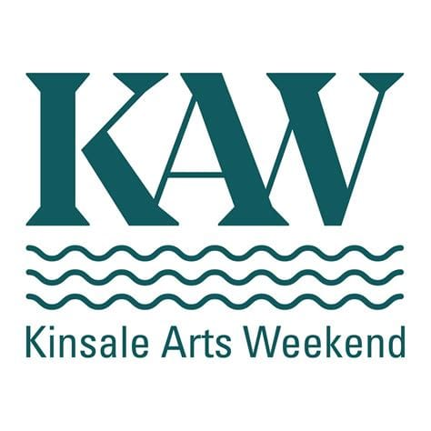

Sit Down Next To Me
Welcome to Sit Down Next To Me
Kinsale's benches have long borne quiet witness to daily life, to gossip and grief, declarations and rows, sea air and passing weather. This year, they begin to speak back.
You can find the benches here:
Choose a bench
A unique story relating to each bench can be heard at each of the eight links below.
- 1. Fish Shed
- 2. Temperance Hall
- 3. Greyhound Bar
- 4. Butchers Row
- 5. Gift Houses
- 6. Pier Head
- 7. The Spaniard
- 8. The Scilly Walk
Acknowledgements
- Author: Donal Hayes
- Performer: David Peare
- Director: Cal Duggan
- Technical Director: Sam Peare
- Editor: Micheál O'Shea
- Mentioned works of Barry Moloney, Jerome Lordan, Derek Mahon and Desmond O'Grady.
- Our sincere thanks to Kinsale Community School for facilitating the production, and to Kinsale Arts Week for supporting this project.